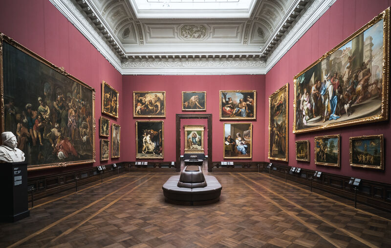

DyProSo-2023

Tourism
Dresden – being famous for its unique baroque architecture and the collection of fine arts – is situated beautifully at both sides of the river Elbe and bears a number of culturally and touristically appealing attractions:
Also the surroundings of Dresden are worth a visit and you will find one of Germanys most beautiful national parks the Saxon Switzerland just within stone’s throw of Dresden easily reachable by local train or in one of the paddle steamers operating on the river Elbe:
1 / 7
Frauenkirche Dresden. Photo: Florian Kneffel (DML-BY)
2 / 7

The Old Masters Picture Gallery with a view of Rafael's Sistine Madonna. Photo: Sebastian Weingart (DML-BY)
3 / 7
Photo of the inner courtyard of the Zwinger. Photo: Patrick Eichler (DML-BY)
4 / 7
The porcelain pavilion in the Zwinger Dresden. Photo: ddpix.de (DML-BY)
5 / 7
Kulturpalast Dresden concert hall with orchestra. Photo: Jörg Simanowski (DML-BY)
6 / 7

Palaisteich in the Grosser Garten. Photo: Sven Döring/Agentur Focus (DML-BY)
7 / 7
The balcony of europe - the Brühl's Terrace with the Academy of Fine Arts Dresden. Photo: ddpix.de (DML-BY)